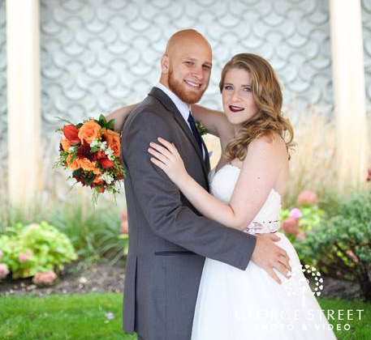
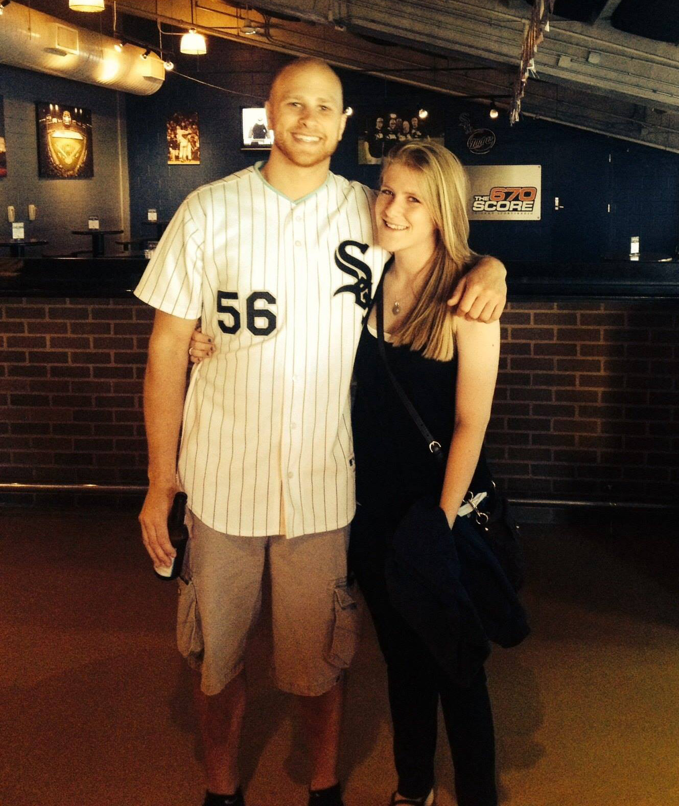

Beyond Work
When not behind a computer screen, I enjoy spending my days outside running, biking, playing ultimate frisbee, or backpacking. In the brisk Cleveland winters, I love to read, watch movies with my wife, and exercise.

Backpacking in the Smokey Mountains

My wife and I on our wedding day

The Chicago White Sox — my favorite team